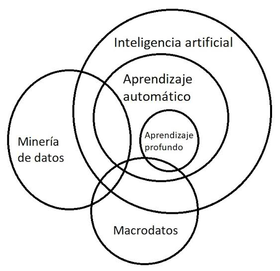

aprendizaje automático (machine learning) es un subcampo de la inteligencia artificial y las ciencias de la computación que permite a los sistemas informáticos aprender y mejorar de forma autónoma a partir de datos, sin necesidad de ser programados explícitamente para cada tarea.
Tipos principales
Aprendizaje supervisado: Utiliza datos etiquetados para entrenar a los modelos a predecir resultados o clasificar información (como identificar correos no deseados o diagnosticar enfermedades).
Aprendizaje no supervisado: Analiza datos sin etiquetar para encontrar patrones ocultos, estructuras o agrupaciones (clustering) de forma autónoma.
Aprendizaje semisupervisado: Combina un pequeño porcentaje de datos etiquetados con grandes volúmenes de datos sin etiquetar para mejorar la precisión del modelo.
Aprendizaje por refuerzo: Un agente aprende a tomar decisiones interactuando con un entorno mediante un sistema de recompensas y castigos por prueba y error
Aplicaciones cotidianas

• : Plataformas como Netflix o Spotify sugieren series y canciones basándose en tu historial.
• Asistentes de voz y texto: Motores de reconocimiento de lenguaje natural y chatbots que responden de forma dinámica.
• Detección de fraudes: Sistemas bancarios que identifican transacciones inusuales en tarjetas de crédito en tiempo real.